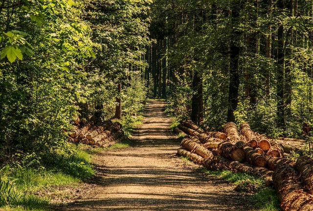
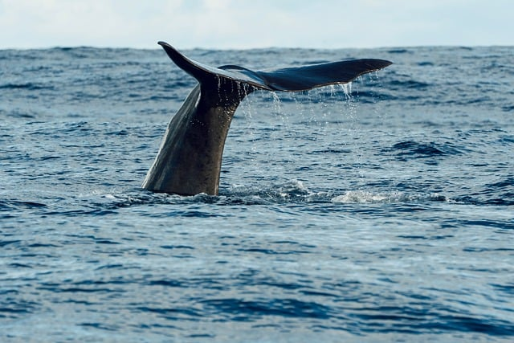
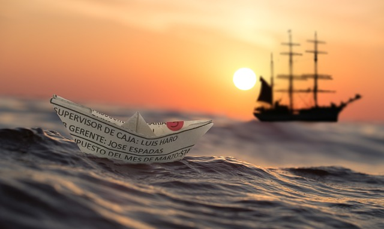
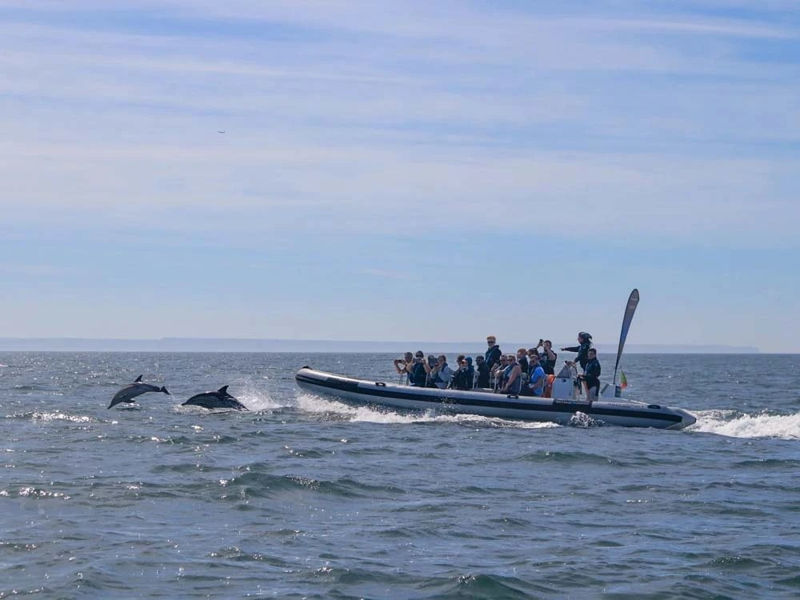
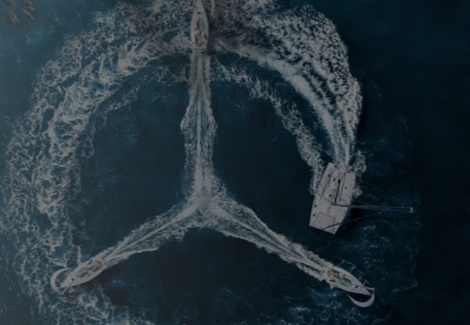
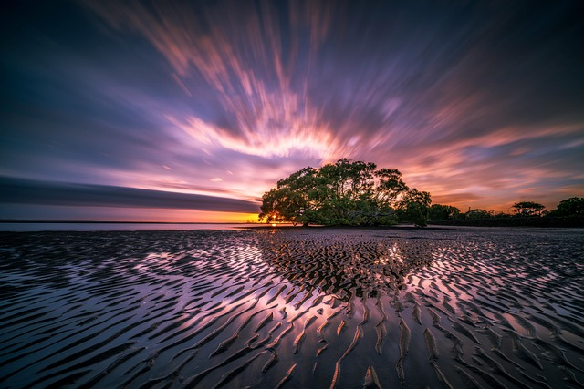
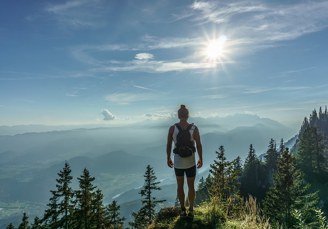
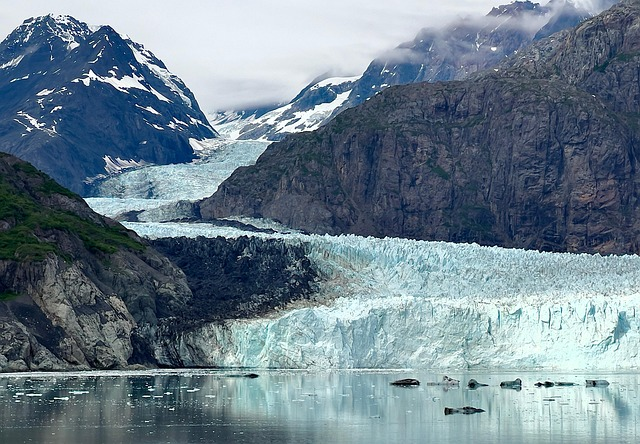
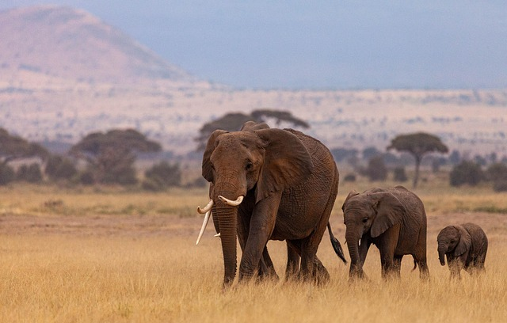

Behind the projects, programmes and partnerships Margarita connects, films and amplifies. Click through to each one — and if you run a green brand, this is the network you want to be in.

Her environmental media company — documentary production, social storytelling and campaigns connecting environmental projects, brands, creators and audiences.
instagram.com/behindthegreensmedia
Her ongoing storytelling and research project on whale communication — the heart of the quest that began with Alaska's whales.
instagram.com/margreenie
The 10-day Lisbon programme turning young creators into eco leaders — filmed for a future reality series, and already changing careers.
jeromemaas.com/blog/greenfluencers-in-the-wild
Portugal's impact sailing organisation — marine education on the Tagus, whale and dolphin watches, and the day-out partner of the Greenfluencers programme.
terraincognita.pt
Terra Incognita's ocean-protection space with Mercedes — educating guests from around the world about marine life along Lisbon's coast.
mboceaniclounge.pt
Her documentary on mangroves — filmed where these forests protect coastlines, biodiversity and the livelihoods of the people who depend on them.
wherevermags.com (Eco Heroines feature)
Her "Voyage Across the Atlantic for the Whales" conversation — recorded live at the festival with Conscious CoCreators.
open.spotify.com (CoCreators Circle E4)
Her long-form story — from a tight-money childhood in Latvia to 70 countries, whales as guides, and founding Behind the Greens.
voyagemichigan.com
Retracing Lyall Watson's 2000 elephant-whale encounter on the Knysna coast — the expedition behind the blog post. Follow the Quest on Threads & Instagram.
threads.com/@margreenieRepresenting Latvia as a Young Energy Ambassador for the European Commission — advocating sustainable, inclusive energy at policy level.
linkedin.com/in/margreenGreen brand or impactful project? Margarita connects brands with trained greenfluencers and turns environmental work into stories people act on.
DM @margreenie to start the conversationEvery donation funds documentary production, greenfluencer training and ocean & wildlife storytelling — independent, transparent, planet-first.
Payment links and wallet addresses are being prepared — check back soon, or follow @margreenie for launch.